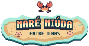
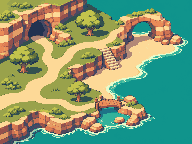

Caderno de travessias · Primeiro lote
Maré Miúda: Entre Ilhas
Tiny Tide: Between Islands

Um siri, uma praia, seis passos por ciclo.
A água sobe em três passos e desce nos três seguintes. Atravesse a praia, escute a maré e descubra o caminho da ilhota.
Praia das Conchas

A passagem da Enseada se abriu. O próximo capítulo ainda não está disponível.
Setas, WASD ou toque escolhem uma saída. O siri segue até o próximo marco. Enter abre o ponto atual. Viajar não muda a maré.
O navegador não permitiu salvar. Você pode jogar, mas o progresso pode se perder ao fechar.
- Maré
- Passos
- Erros
Objetivo no tabuleiro: concha brilhante.
Mapa em texto e ajuda
Use setas, WASD ou toque nos botões. R reinicia. Passos bloqueados não contam.
S: início · .: chão firme · =: baixio · #: bloqueio · C: concha · B: fragmento · G: saída · H: pedra alta · A: segundo siri · P: placa · D: portão · T: raiz.
Créditos
O caminho continua a partir da Praia das Conchas.
Jogo e direção: Luigi Scofano de Araujo.
Inspirado na mecânica do Maré Miúda de Miudezas, com código, arte provisória e áudio próprios.
Som e música
O jogo inicia o áudio depois da primeira interação.